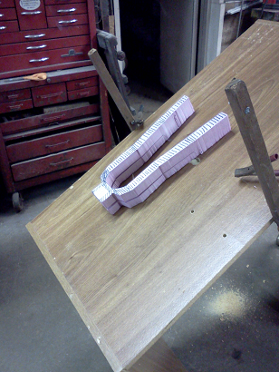
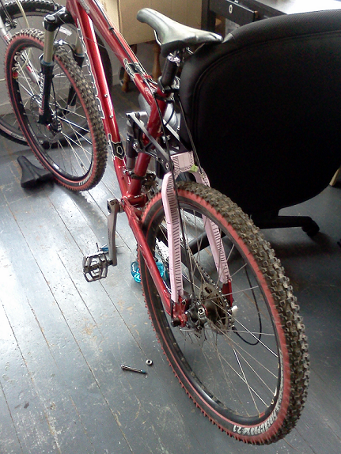
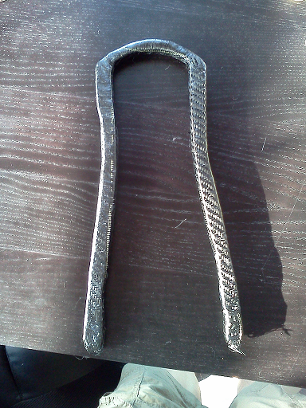
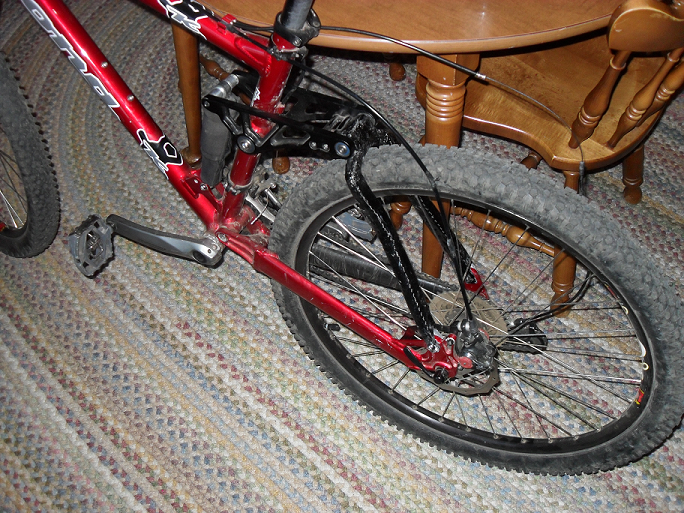
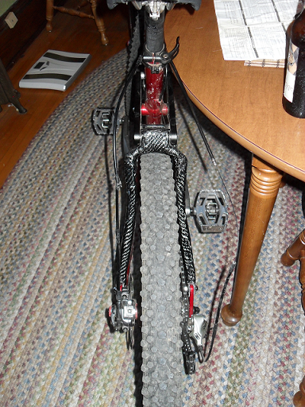
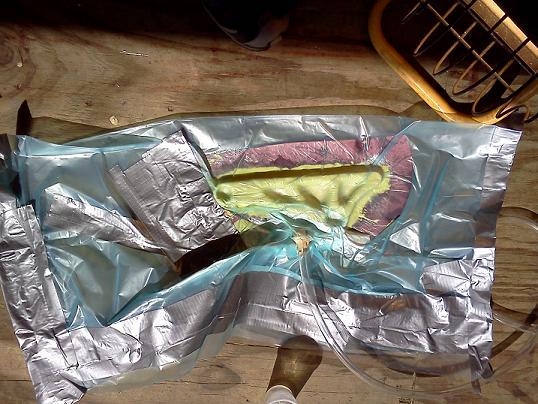
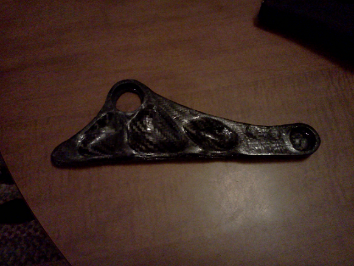

Still a work in progress. I began reading about carbon fiber design and layup briefly and realized that carbon fiber design can done at home with a minimal amount of equipment. I decided to try a small part first so get the hang of it. I wanted to mold a part from my mountain bike with the idea that at some point, I would replace the whole frame with carbon fiber parts.
Luckily my bike has a removable seat stay. That’s the part of the frame that connects from the rear wheel to just below the seat. The removable seat stay design allowed for removal and easy copying of the design. However, the seat stay is also a critical structural component of the frame.
On to making the mold..
This is by far the most critical and time-consuming portion of the project. There are two options: make a mold of the outside of the part, or make a foam copy of the part. I decided on the the foam option because it is much cheaper. I used regular pink insulation foam from a hardware store. For $25, I bought more foam that I will ever use.
I traced the seat stay on the foam and then encountered a problem- the foam is actually pretty difficult to cut. I learned that a hot wire is a common way to cut dense foam. Still trying to keep the project as cheap as possible, I set out to make my own hot wire cutter.
Here’s the seat stay on my homemade hot wire cutter.

I made it out of an old desk, some scrap wood, an old guitar string, and a battery charger. The guitar string is stretched between the two wooden poles and the battery charger is hooked up to either end. The charger puts out 12 amps, which is more than enough to get the string glowing red hot. The B string was best for this. The E string burnt up almost instantly. I don’t have a picture, but version 2.0 has the excess string wrapped in a coil under the desk to act as a variable resistor to control the temperature of the wire.
Here’s the nearly finished foam core on my bike.

After a few small alterations and some sanding, the foam core was ready to be wrapped in carbon fiber. Unfortunately, I don’t have any picture of the actual layup. As I learned, making carbon fiber parts is very messy (stray fibers everywhere and epoxy mess) so I didn’t have a chance to get the camera out.
I cut up strips of carbon fiber about 1 inch wide and started wrapping the strips around the foam core. Then I applied a 1:2 epoxy:catalyst mixture to the outside. This process was repeated 9 times to produce a verystrong part. Remember I don’t want this crucial part to break while I’m riding!
This picture was taken about about halfway through the process. I let the first two layers cure overnight before finishing the rest.

And several layers later. The final part! It’s not pretty, but it’s functional, and so far I have about 200 miles of rough trail riding on it.


I’ve also started working on a copy of the shock linkage (the black bar that connects to the top of the seat stay). It’s still a work in progress.
I made the shock link a bit differently. Instead of using a foam core I made a mold from the original part. For the mold I used a heavy flexible molding rubber. The flexibility of the rubber allows it to be easily removed during the de-molding process. A more rigid mold may get stuck and can’t be removed with out ruining it. I found that out when I tried to use polyester for the first attempt.
One downside of the flexibility of the rubber mold is that it wont hold its’ shape in the lamination process. To solve this problem I made a fiberglass backing to make it more rigid. Kind of a mold of a mold.
Here’s the rubber mold and it’s fiberglass backing.

The lamination using a mold is a bit different that what I did before. This time I laid all of the layers down into the mold with epoxy. I then sealed a special bag around the whole thing and applied a strong vacuum to it. This sucks epoxy through all the fibers and removes any excess, making the final part lighter and stronger.
This is what it looked like in the vacuum bag.

All that’s left to do now is drill out the holes for the bearings. Then sand and apply an outer coat of epoxy to make it look nice.